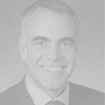

JACQUES DE CHATEAUVIEUX
Mr. Jacques de Chateauvieux has been Chairman and Chief Executive Officer of BOURBON since 1979. Beginning in 1989, he helped to develop BOURBON into an international conglomerate which led to its listing on the Paris Stock Exchange in 1998. In 2001, he began refocusing BOURBON’s strategy to make it a world leader in offshore oil and marine services. Mr. Jacques de Chateauvieux has been a member of the AXA Supervisory Board since 2005 and became Chairman of the AXA Supervisory Board in April of 2008.
GRAHAM JOHN PORTER
Mr. Graham John Porter is the Chairman of Hong Kong-based Tiger Group Investments, a sponsor of several shipping industry businesses including NYSE-listed Seaspan Corporation, Shanghai-based Greathorse Shipping Holdings Limited and SeaTiger Capital (an alternative provider of debt and equity capital to the energy and transportation markets). Mr. Graham John Porter has been a JACCAR Board Member since 2011.
JEAN-LOUIS WAUCQUEZ
Mr. Jean-Louis Waucquez joined Banque Degroof, the main private bank in Belgium, in 1994. By 1995 he had successfully created a business unit to better service the Family Business Owners of Banque Degroof, Luxembourg. At present, he is working on a new corporate strategy for UHNWI along with a strong network of professional advisors to better solve the most complex banking challenges across Europe. He has since been appointed Head of the International Estate Planning Department.
RAMON DE OLIVEIRA
Mr. Ramon de Oliveira joined JP Morgan, Paris in 1997. In 1989, following special powers from the Federal Reserve Bank, he was appointed both to lead JP Morgan's entry into the high-yield bond business and to run the Structured Finance practice. In 1991, he founded and led the team of executives who built JP Morgan’s Global Equities business; he also oversaw the firm’s portfolio of Private Equity Investment. Between 2002 and 2006, Mr. de Oliveira was an Adjunct Professor of Finance at Columbia University. He is now Managing Partner of the consulting firm Investment Audit Practice LLC. Mr. Ramon de Oliveira has been a JACCAR Board Member since 2011.
RENO MAURIZIO TONELLI
Mr. Reno Maurizio Tonelli has served as Head of International Credit Department at Société Européenne de Banque, Luxembourg, Head of Investment Fund Department at San Paolo Bank S.A., Luxembourg, and Head of Corporate Department (OPC-Credits- Holding companies) at San Paolo Bank S.A. between the years 1992 and 1996. He has been a partner of BDO since 2001 and became a Board Member of JACCAR in 2010.
PIERRE LENTZ
Mr. Pierre Lentz is an international business specialist, specifically in the financial, commercial, industrial and real-estate service-sectors – joining the Board of Directors for numerous companies along the way. In 1999 he became a partner of CF Corporate (formerly Compagnie Fiduciaire). Mr. Pierre Lentz has been a JACCAR Board Member since 2004.
YUAN DING
Mr. Yuan Ding is the Finance and Accounting Department Chair for CEIBS and a member of the European, French and American Accounting Associations. In the world of publishing, he is co-editor of The International Journal of Accounting and Associate Editor of China Journal of Accounting Research. He is also an Editorial Board Member of The Journal of Accounting and Public Policy, The Global Perspectives on Accounting Education Journal, as well as Research in Accounting in Emerging Economies. He lectures on financial accounting, statement analysis, international accounting and corporate governance at the MS, MBA, EMBA and PhD levels, and delivers special in-company programs in Europe and in China. Mr. Yuan Ding has been a JACCAR Board Member since 2011.
VO THI HUYEN LAN
Mrs. Vo Thi Huyen Lan joined JACCAR Vietnam in 2006 as CEO. Currently, she is the Managing Director of JACCAR HOLDINGS, a Board Member of BOURBON and SINOPACIFIC Shipbuilding Group, as well as of other companies in Vietnam. Mrs. Vo Thi Huyen Lan became a Board Member of JACCAR in 2009.
VINCENT GOMBAULT
Mr. Vincent Gombault worked in AXA Group’s Industrial Holdings department in 1991 - 1998. Before that, he worked as Investment Manager in the M&A department of Société Générale. Since 1998, he has joined AXA Private Equity and now is Managing Director Funds of Funds and Private Debt. Mr. Vincent Gombault has been a JACCAR Board Member since 2012.
